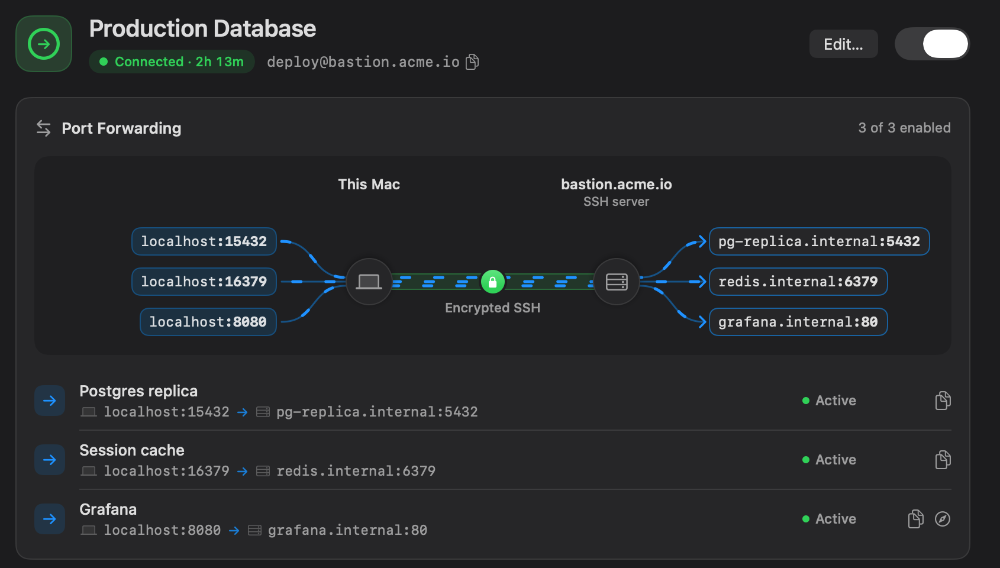
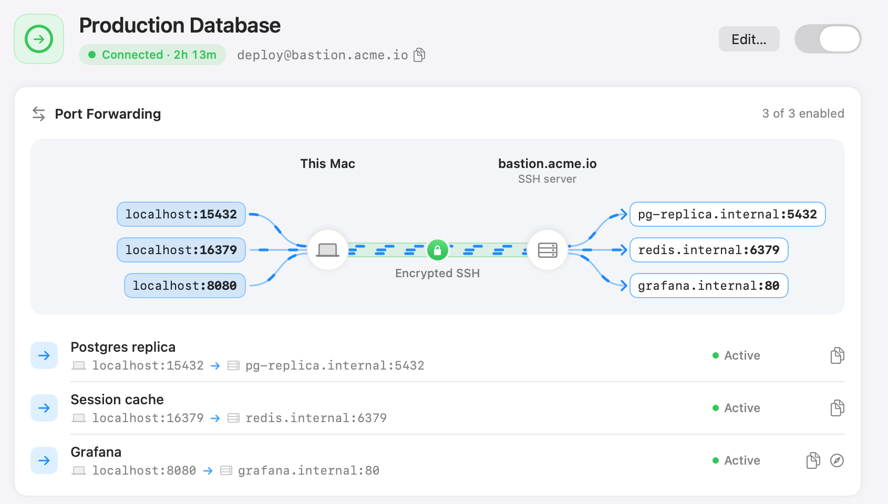

Porthole: an SSH tunnel manager built for Apple silicon
An SSH tunnel manager built for Apple silicon.
Bring the databases, dashboards and internal sites behind your servers to a local port on your Mac.
- macOS 14 or later
- Apple silicon
- 10 interface languages
- Open source on GitHub
-
Apps connect to a local port
Database clients, browsers and scripts connect to
localhost:15432as usual. As far as they can tell, the service runs right here on this Mac. -
Every rule shares one encrypted connection
Porthole drives the OpenSSH that comes with macOS, and all the rules in a tunnel travel over the same ssh connection. If it drops, Porthole tries again after 2, 4, 8… up to 30 seconds, and refreshes it when your Mac wakes from sleep.
-
The server reaches the private network for you
Traffic leaves from
bastion.acme.ioand goes on to addresses only it can reach: a database replica, Redis and Grafana.

Apps connect to a local port
Database clients, browsers and scripts connect to
localhost:15432as if the service ran on this Mac.Every rule shares one encrypted connection
Porthole drives the OpenSSH that comes with macOS, reconnects on its own and refreshes tunnels when your Mac wakes.
The server reaches the private network for you
Traffic leaves from the SSH server and goes on to addresses only it can reach.
Three kinds of forwarding rules
A tunnel can hold several rules, and a rule's type can change at any time. The diagram below is the same one Porthole draws in its editor.
Reach a remote service on a local port
Apps on this Mac connect to localhost:5432. The traffic goes through server.example.com, which connects on to db.internal:5432. Good for databases, Redis and internal dashboards.
ssh -N -L 5432:db.internal:5432 server.example.comShare a local service with the server
server.example.com listens on port 8080. Connections that arrive there come back through the tunnel to this Mac and on to localhost:3000. Good for showing a work-in-progress site to a colleague, or for receiving webhook callbacks.
ssh -N -R 8080:localhost:3000 server.example.comBrowse through the server
A SOCKS4/5 proxy runs on localhost:1080. Point a browser or app at it and every connection leaves from server.example.com, which is handy for sites that only the server can reach.
ssh -N -D 1080 server.example.com
Colour tells you the state
Each tunnel is drawn as a bow tie: the addresses on this Mac's side on the left, the server's side on the right, and every rule meeting in one SSH channel in the middle. Filled tags are the ports that listen for connections; outlined tags are where the traffic ends up.
- Local forwarding
- Remote forwarding
- SOCKS proxy
- Connecting
- Not connected
The lock in the middle of the channel turns green once connected and becomes a red ✕ when the connection fails. When the route goes through a proxy or jump host, the channel is labelled “via …”.
Secure, steady and out of your way
- Passwords stay in the Keychain
- Login passwords, key passphrases and proxy and jump host passwords are kept only in the macOS Keychain. Neither the settings file nor exports contain a password.
- New servers are checked by fingerprint
- The first time you connect, Porthole shows the server's fingerprint and connects only after you confirm it. A changed host key is always refused.
- Proxies and jump hosts
- Reach the server through a SOCKS4, SOCKS5 or HTTP proxy (with user name and password), or through a jump host (ProxyJump).
- Reconnects on its own
- Retries at growing intervals of 2, 4, 8, 16 and 30 seconds, and refreshes tunnels after your Mac wakes from sleep or the network comes back.
- Port taken? It tells you by whom
- Before connecting, Porthole checks the local ports. When one is taken, it names the process and its PID, so there's no digging through
lsof. - No leftover processes
- If Porthole ever quits unexpectedly, the ssh processes it leaves behind are cleaned up the next time it starts.
- Understands
~/.ssh/config - Automatic sign-in uses ssh-agent and the keys you already have, and Host entries with forwards can be imported as tunnels.
- The ssh command in plain sight
- The editor previews the complete ssh command as you go, and copies it for the terminal with one click.
- 10 interface languages
- English, 简体中文, 繁體中文, 日本語, 한국어, Deutsch, Français, Español, Português and Русский. Follow the system, or pick one just for Porthole.
- Light, dark or automatic
- Switch any time with the toolbar button, the menu bar panel or ⇧⌘D. Every window and dialog follows along.
Moving over from SSH Tunnel
Codinn's SSH Tunnel is Intel-only and won't run on future versions of macOS. Porthole matches its features and imports its export files directly.
- In SSH Tunnel, select all your tunnels and choose File ▸ Export Selected Tunnels….
- In Porthole, choose File ▸ Import Tunnels… (⇧⌘I) and pick that file.
- Exports don't include passwords. Enter each one once when you first connect and tick “Remember in my Keychain” so you won't be asked again.
Download Porthole
1.0.0
Download zip- Requires
- macOS 14 Sonoma or later on Apple silicon (M-series)
- Source
- github.com/bryan31/porthole (MIT License)
- Released
- 2026-11-26
- SHA-256
-
697bc77d141e89e911210e3e66555268139e87e73b49bc40207f2b5a9a1430f6
Install
-
Unzip and drag it into Applications
Double-click the zip you downloaded and drag Porthole.app into your Applications folder.
-
Open it the first time
Porthole isn't notarized by Apple yet, so macOS stops it the first time you open it. Go to System Settings ▸ Privacy & Security, find the message about Porthole under Security, click “Open Anyway” and confirm. From then on it opens normally.
If you're at home in Terminal, you can remove the quarantine flag instead:
xattr -dr com.apple.quarantine /Applications/Porthole.app -
Create your first tunnel
Press ⌘N, fill in the server and the ports to forward, and click “Create & Connect”. The guide walks through it step by step.
To check the download, run shasum -a 256 ~/Downloads/Porthole-1.0.0.zip. It should print the SHA-256 shown above.